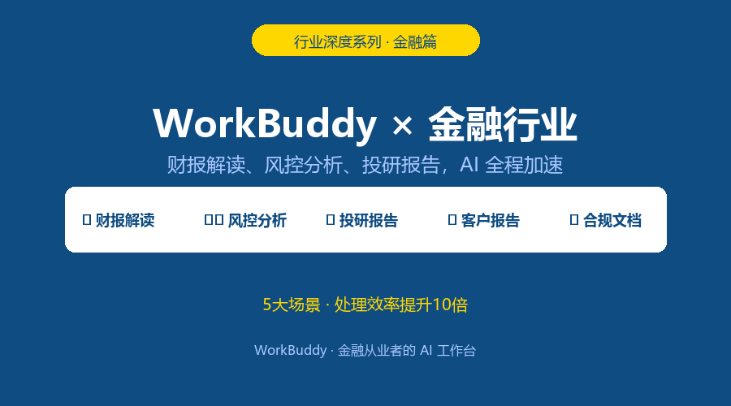
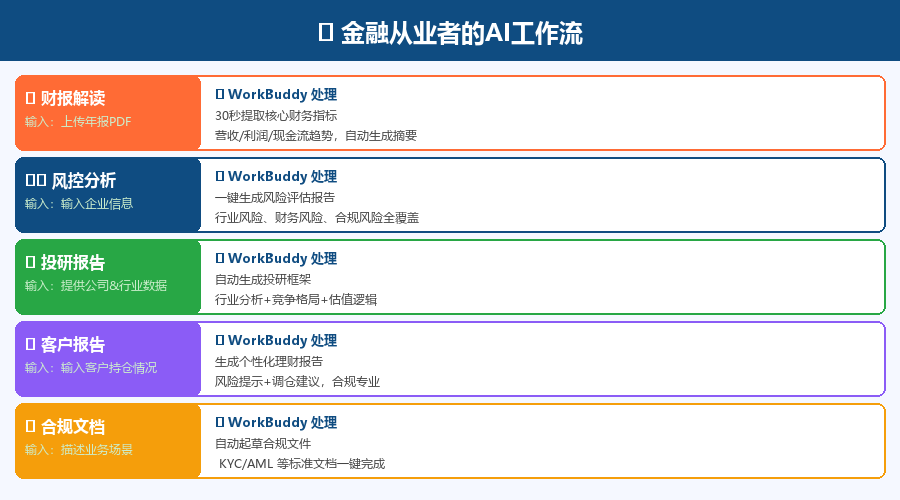
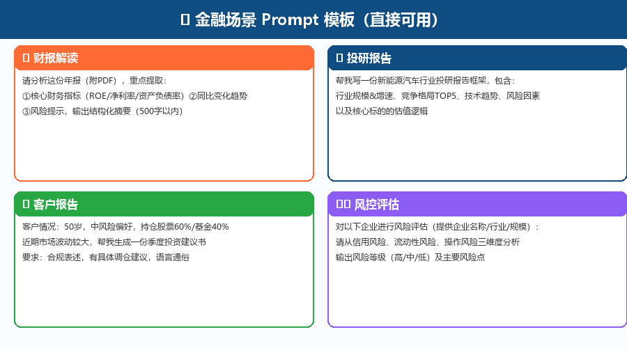
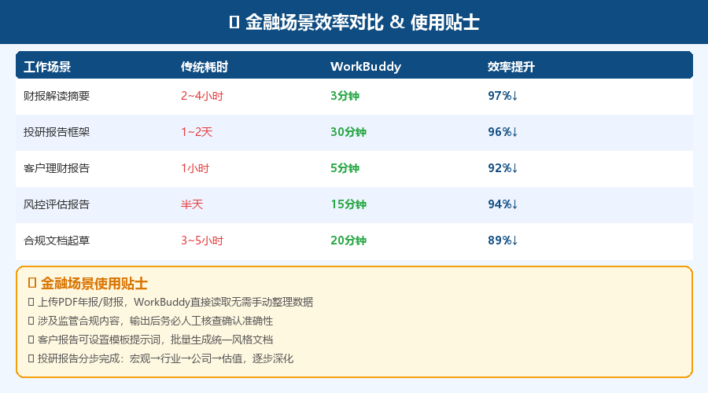

金融从业者的时间，比任何行业都贵。
一位券商分析师告诉我：写一份完整的行业研报，至少要3天——收集数据、整理报表、撰写分析、校对排版……
但这些流程中，有70%是信息整合和格式化工作，而不是真正需要专业判断的部分。
WorkBuddy 能把这70%的时间还给你。
今天这篇，专门针对金融行业，拆解5大核心场景的具体落地方法。

📋 2大场景全流程拆解
下面把每个场景的输入→处理→输出完整呈现，Prompt 可直接复制使用。

场景1：💹 财报解读
Prompt：
请分析这份年报（附PDF），重点提取： 核心财务指标（ROE/净利率/资产负债率）、同比变化趋势 风险提示，输出结构化摘要（500字以内）效果：30秒提取核心财务指标，营收/利润/现金流趋势自动生成，风险点标红
场景2：📈 投研报告
Prompt：
帮我写一份新能源汽车行业投研报告框架，包含： 行业规模与增速、竞争格局TOP5、技术趋势、风险因素 以及核心标的的估值逻辑效果：生成完整投研框架，含行业分析、竞争格局、技术路线图、估值逻辑
场景3：👤 客户报告
Prompt：
客户情况：50岁，中风险偏好，持仓股票60%/基金40% 近期市场波动较大，帮我生成一份季度投资建议书 要求：合规表述，有具体调仓建议，语言通俗效果：生成合规、个性化的季度投资建议书，调仓逻辑清晰，一键批量生成
场景4：⚠️ 风控评估
Prompt：
对以下企业进行风险评估（提供企业名称/行业/规模）： 请从信用风险、流动性风险、操作风险三维度分析 输出风险等级（高/中/低）及主要风险点效果：输出结构化风险评估报告，三维度评级，主要风险点清单
场景5：📋 合规文档
Prompt：
我需要起草一份客户适当性评估说明（参考KYC标准） 客户背景：个人投资者，投资经验3年，年收入50万 请生成符合监管要求的文档框架效果：生成符合监管框架的合规文档初稿，减少法务往返次数

⚡ 效率对比数据

💡 使用贴士
上传PDF年报/财报，WorkBuddy直接读取，无需手动整理数据 涉及监管合规内容，AI输出后务必人工核查确认准确性 客户报告可设置模板提示词，批量生成统一风格文档 投研报告分步完成：宏观→行业→公司→估值，逐步深化
🎯 金融 × WorkBuddy：效率革命
WorkBuddy 不会取代金融专业判断，但它能消灭重复性工作：
财报解读：从半天→3分钟，你的专业时间用在分析，不是整理 投研报告：从3天→30分钟框架，剩余时间深挖核心观点 客户服务：报告批量个性化，客户满意度提升
重要提示：所有AI输出仅供参考，关键投资决策必须经过专业人员审核。
从今天的一份财报分析开始试试。
—— WorkBuddy 行业深度系列 · 更多干货持续更新 ——